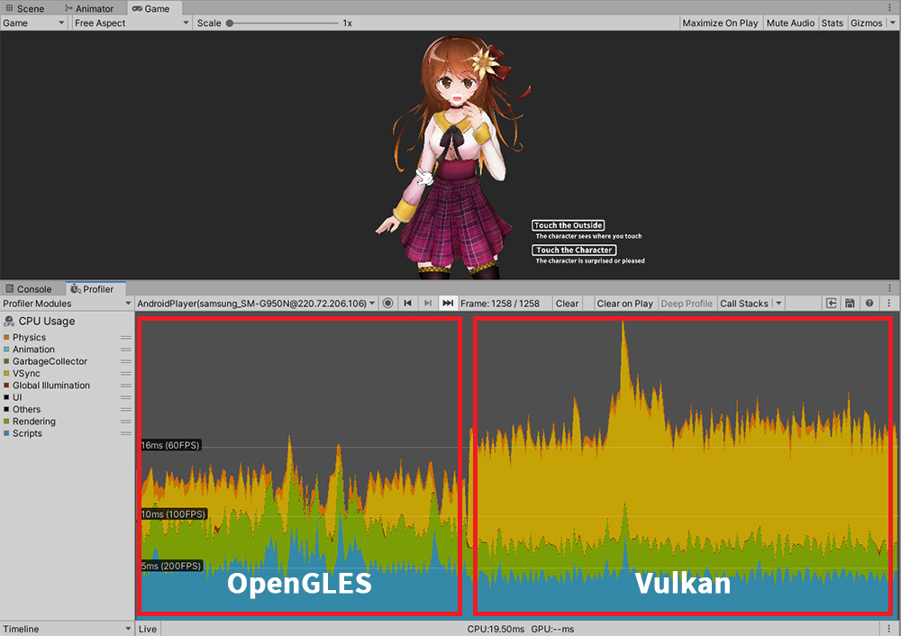

AnyPortrait > マニュアル > Vulkanビルドのパフォーマンスの問題
Vulkanビルドのパフォーマンスの問題
このページでは、グラフィックスAPIの一つである「Vulkan」を利用して、Androidプラットフォームでビルドをした場合、一部の機器ではパフォーマンスが大幅に低下問題について説明します。
この問題は、ユーザーからの情報提供を受け、当社のテストを行った結果によるものです。
実行性能はUnityのバージョンとAndroidのバージョン、実行機器によって違いがあります。
私たちは、Android機器である「Galaxy S8」でFPSが半分程度に減少程度の性能が良くないユーザの情報提供を受けた。
私たちは、この問題が「Vulkan」によるものであることを確認しました。
基本APIである「OpenGLES」と「Vulkan」を使用して、それぞれのビルドしたときの性能の違いは、次のようでした。

まず、AnyPortraitデモシーンを「Galaxy S8」で実行してプロファイラを利用して、性能を確認した結果です。
スクリプトとレンダリングについては、「60 FPS」を上回る結果を見ることができます。
しかし、「VSync」が変動作して、「Vulkan」の場合に、パフォーマンスが大幅に低下することを見ることができます。
AnyPortraitは、基本的な「Surface Shader」と「Mesh Renderer」を利用するので、Unityの基本的な要素をレンダリングするのとは大きな違いがありません。
したがって私たちのチームは、「Transparent」材質のメッシュを配置し、テストをしました。

上記のテストの結果からわかるように、「Vulkan」を利用する場合、「VSyncによる性能低下の問題」は、AnyPortraitの使用かどうかに関係なく共通して発生します。
私たちは、この問題が機器によって発生していない可能性があることを確認しました。
この問題を解決するために、現在では、「Vulkan」を使用しないように設定する方法しかありません。

(1) 「Project Settings > Player」を選択します。
(2) 「Vulkan」を選択し、 (3) 削除します。

「OpenGLES」のみレンダリングになるように設定されました。